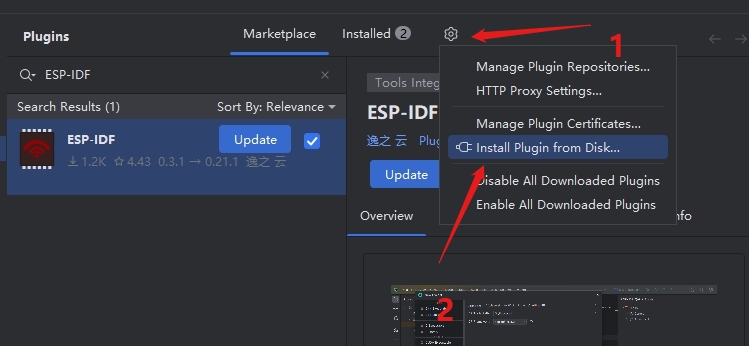
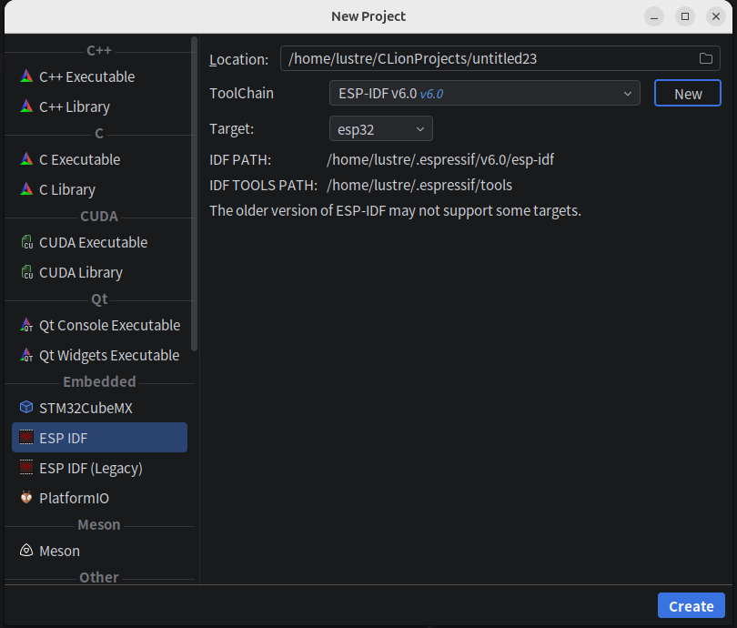
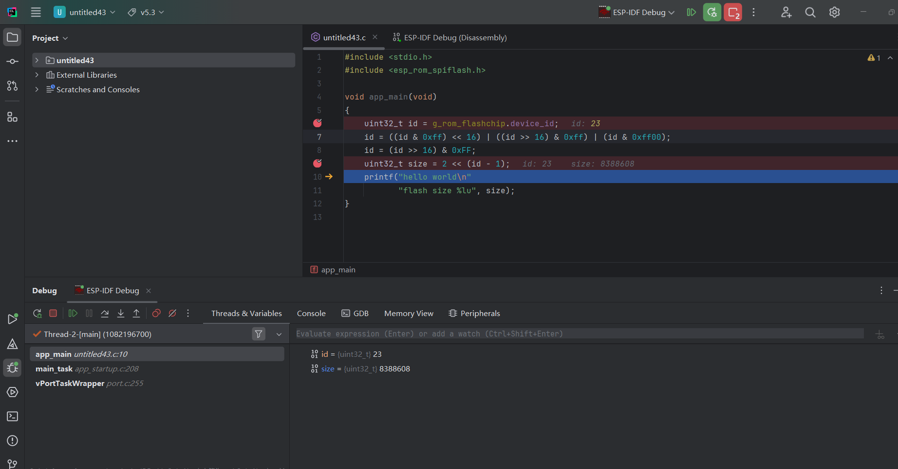
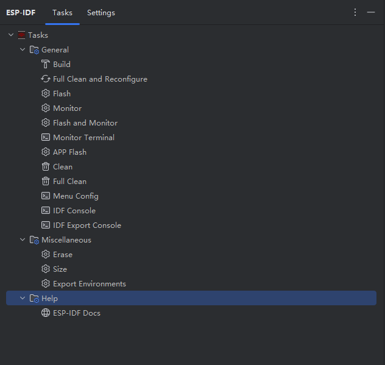
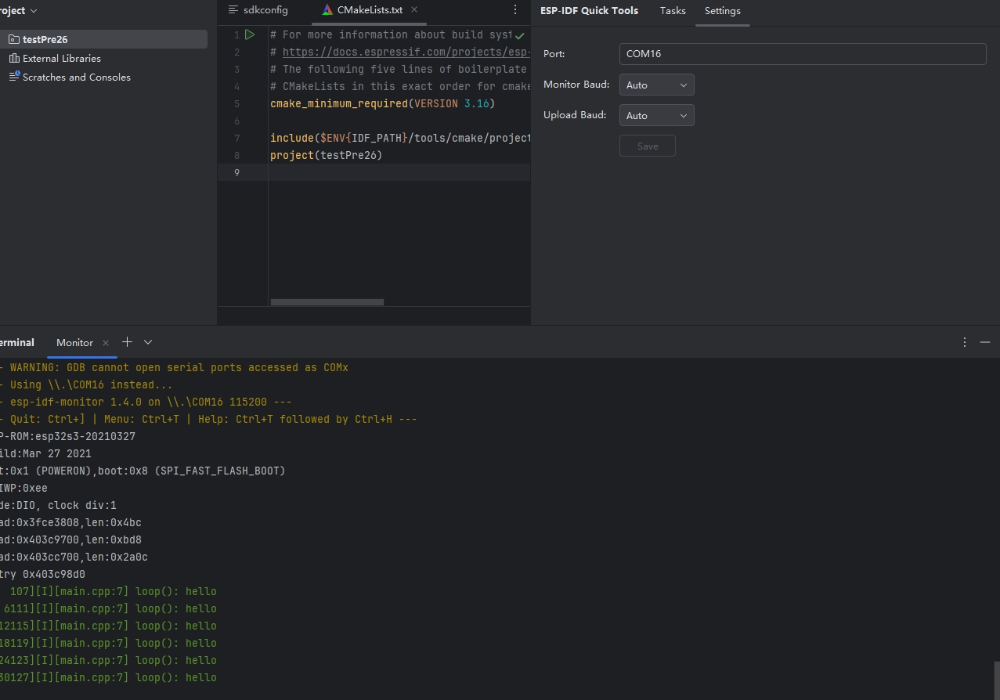

ESP-IDF for CLion
这是一个非官方的ESP-IDF CLion插件。
当前文档对应插件版本:0.5。
在clion官方文档中clion可无插件配置ESP-IDF。
插件安装

release仓会出现预览版，插件市场一般需要两个工作日审核，正式版也会比插件市场更早。
项目创建向导
本插件在clion新建项目选项中添加ESP-IDF选项。 可以自动配置clion 的toolchain ,cmake profile,不用做额外配置。

允许多个esp-idf共存(但手动切换多个idf toolchain情况，可能导致环境变量冲突，可以关闭clion重新打开。)
调试
0.4 新增调试功能 可以断点调试 查看线程、变量，集成gdb控制台，内存视图，和外设寄存器查看。

快捷命令树
本插件封装了一些常用ESP-IDF命令。

项目设置
支持单项目配置

31 七月 2025